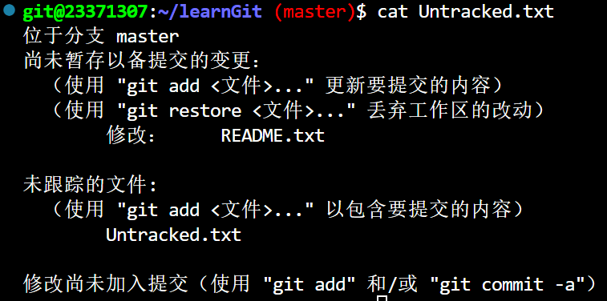
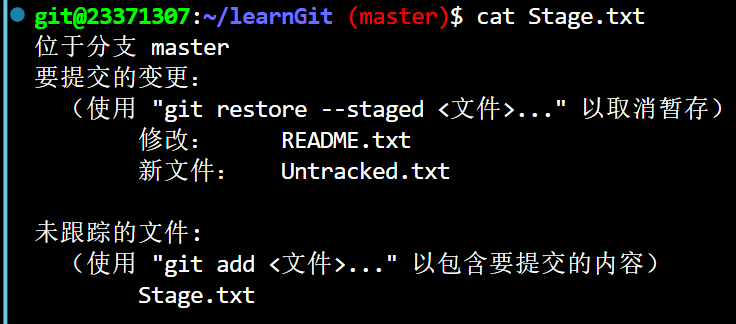
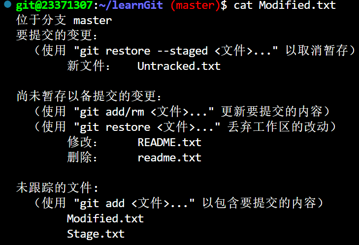
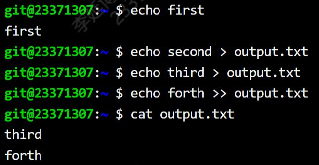

BUAA-OSLab0实验总结
Well, I wonder, am I stronger?
Is it possible to sleep on my own, all alone?
壹 前言
笔者前两周可谓是被OO折磨的不轻，第二次OO作业的重构耽误了很多时间。于是笔者一周没有学习OS实验，现重温Lab0指导书，趁线上实验开始前，借此机会温习Lab0的知识点。
昨日刚微微熬了个小夜，今日精神状态格外美丽，虽觉备受挫折、时运不济，但也不忘“疾风知劲草”之道理。
贰 正文
实验总结共分为三个部分：思考题、难点分析、实验体会。
实验内容包括Linux的基础，shell脚本编程，git的知识，Makefile项目管理。
一 实验思考题
Thinking 0.1 思考下列有关 Git 的问题：
- 在前述已初始化的 ~/learnGit 目录下，创建一个名为 README.txt 的文件。执 行命令 git status > Untracked.txt（其中的 > 为输出重定向，我们将在 0.6.3 中 详细介绍）。
- 在 README.txt 文件中添加任意文件内容，然后使用 add 命令，再执行命令 git status > Stage.txt。
- 提交 README.txt，并在提交说明里写入自己的学号。
- 执行命令 cat Untracked.txt 和 cat Stage.txt，对比两次运行的结果，体会 README.txt 两次所处位置的不同。
- 修改 README.txt 文件，再执行命令 git status > Modified.txt。
- 执行命令 cat Modified.txt，观察其结果和第一次执行 add 命令之前的 status 是 否一样，并思考原因。

如上图所示，git status应显示都在未跟踪的文件中，但是由于已经提交过了README.txt，所以并不在其中。

如上，Untracked.txt进入了暂存区。

被修改的README.txt状态变为Modified，需要使用git add将其状态更新。
Thinking 0.2 仔细看看0.10，思考一下箭头中的 add the file 、stage the file 和 commit 分别对应的是 Git 里的哪些命令呢？
add the file: 用git add将未跟踪的文件添加进暂存区，状态为Staged。stage the file: 用git add将已修改的文件加入缓存区，状态也为Staged。commit: 用git commit将暂存区内容提交储存区，文件不离开了暂存区，变成了Unmodified状态。
Thinking 0.3 思考下列问题：
- 代码文件 print.c 被错误删除时，应当使用什么命令将其恢复？ 2. 代码文件 print.c 被错误删除后，执行了 git rm print.c 命令，此时应当 使用什么命令将其恢复？ 3. 无关文件 hello.txt 已经被添加到暂存区时，如何在不删除此文件的前提下 将其移出暂存区？
1.git checkout -- print.c：只是从工作区删除，可以在暂存区checkout回来。
2.git checkout HEAD print.c：文件不再存在于暂存区当中，可以使用checkout命令将分支中的文件替换进入工作区以及暂存区。
3.git rm --cached hello.txt：在不改变本地文件的情况下，删除暂存区文件。
Thinking 0.4 思考下列有关 Git 的问题：
• 找到在 /home/22xxxxxx/learnGit 下刚刚创建的 README.txt 文件，若不存 在则新建该文件。 • 在文件里加入 Testing 1，git add，git commit，提交说明记为 1。 • 模仿上述做法，把 1 分别改为 2 和 3，再提交两次。 • 使用 git log 命令查看提交日志，看是否已经有三次提交，记下提交说明为 3 的哈希值a。 • 进行版本回退。执行命令 git reset —hard HEAD^ 后，再执行 git log，观 察其变化。 • 找到提交说明为 1 的哈希值，执行命令 git reset —hard 后，再执 行 git log，观察其变化。 • 现在已经回到了旧版本，为了再次回到新版本，执行 git reset —hard ，再执行 git log，观察其变化。
即通过git reset回退到旧版本，git reset --hard HEAD^便是回退到上一个版本。由此可见git log得到的Hashcode可以帮助我们快速改变版本，而且没有对其他版本造成修改或者删除的影响。
Thinking 0.5 执行如下命令, 并查看结果：
• echo first • echo second > output.txt • echo third > output.txt • echo forth >> output.txt

如图，echo便是输出指令，>作为重定向符号，会将指定目标先全部清空，如果想要执行追加重定向需要使用>>，output.txt的内容用cat显现了出来。
Thinking 0.6
使用你知道的方法（包括重定向）创建下图内容的文件（文件命名为 test）， 将创建该文件的命令序列保存在 command 文件中，并将 test 文件作为批处理文件运行，将 运行结果输出至 result 文件中。给出 command 文件和 result 文件的内容，并对最后的结 果进行解释说明（可以从 test 文件的内容入手）. 具体实现的过程中思考下列问题: echo echo Shell Start 与 echo echo Shell Start 效果是否有区别; echo echo $c>file1 与 echo echo $c>file1 效果是否有区别.
创造test文件需要将每一条命令都使用echo指令，输出到test文件中即可，例如：
echo "echo Shell Start..."当我们运行test文件，脚本将a，b赋值为1，2，让c=a+b然后将cba的值依次存到file1-3中，然后将file1-3的值输入到file4中，然后将file4的值输入到result中，所以result的结果会是3 2 1
- 在第一对命令之间有没有引号执行效果上没有区别。
- 而第二对命令中，不加引号的会按照语法执行这个命令，将echo $c输入到file1文件里。单引号内的内容则会被第一个echo直接输出。在指导书中也有指出，若要想让变量实现具体效果，需要使用双引号””
二 难点分析
时隔许久，快把实验忘却了，再看一下当时写的具体内容…笔者遇到的难点出现在Exercise0.4，关于Makefile的嵌套以及头文件的处理。
在编译子目录下的fibo.c与main.c文件时，遇到了头文件无法处理的报错，后来在指导书中找到需要使用-I的参数读取头文件的相对路径，我的实现如下：
1 | 3 SRC = code/fibo.c code/main.c |
第二个难点在于如何调用嵌套在子目录下的Makefile，舍友的实现貌似使用了-C的参数实现，我在实际操作中尝试了如下命令：
1 | ... |
但是实际上这个操作是不可行的，因为在bash语言中cd code之后如果没有其他操作，系统会自动返回原目录，相当于这个Makefile还是调用自己。后续在AI的帮助下，笔者找到了可实现的写法，即：
1 | ... |
三 实验体会
在这两周的lab0实验中，我又加深了对gcc、git、Shell以及Makefile的理解，但是由于内容繁杂，自己也没有经常性的复习，很多时候完成实验的实现还是要过分地依赖教程与指导书。其次便是很多操作其实有很多更加简单地实现，从awk指令就可见一斑，有很多非常强大的操作与实现，其实有时间多多学习是有利于我们提升自己的实验效率的。最后，作为一个新入门Linux的学生，还是无时无刻不感受着Linux系统对我的知识体系造成的影响， “一切皆文件的Linux终极哲学” 也足够使我终生去感受它、体会它。
叁 后记
本次的分享是夹带在OO洪流之中发出的，无论是内容还是排版笔者都觉得欠妥，希望以后有时间能保证相对高质量的帖子吧~本篇帖子到此就结束啦，我们下次OS实验~再见！:D
If you like this blog or find it useful for you, you are welcome to comment on it. You are also welcome to share this blog, so that more people can participate in it. If the images used in the blog infringe your copyright, please contact the author to delete them. Thank you !